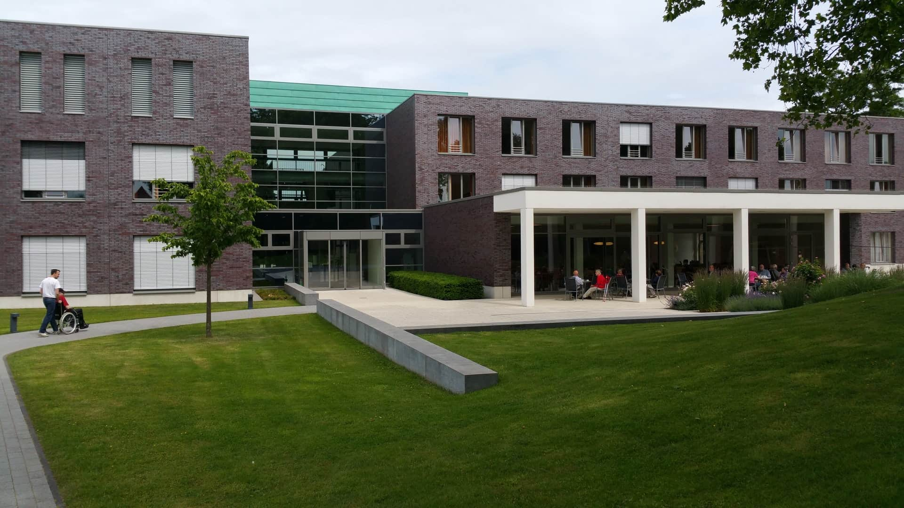

Acolhimento
Escuta para compreender suas necessidades e acolher as dúvidas que fazem parte da sua relação com a alimentação.
Dr. Rafael Oliveira é o personagem que apresenta o cuidado da Nutrir: uma nutrição atenta à sua história, à relação com a comida e às possibilidades de cada fase da vida.
A proposta da clínica valoriza uma conversa sem julgamentos. Entender seus horários, preferências e dificuldades é parte do caminho para construir orientações que façam sentido no cotidiano.
A alimentação pode ser uma ferramenta para promover bem-estar, autonomia e mais tranquilidade à mesa. Por isso, o acompanhamento considera o contexto da sua família, a cultura alimentar e o acesso aos alimentos.
Na fictícia Vila Serena, em São Paulo, a Nutrir apresenta uma forma de cuidar com escuta e participação. O atendimento presencial e online é organizado para respeitar o seu ritmo.
Nosso propósito é aproximar o cuidado nutricional da vida real, com conhecimento explicado de forma clara e espaço para ajustar o caminho junto com você.
Clínica e profissional fictícios. Formação, trajetória e registro profissional reais serão inseridos na personalização.Escuta para compreender suas necessidades e acolher as dúvidas que fazem parte da sua relação com a alimentação.
Orientações construídas com você, respeitando sua rotina, seus objetivos e o que é possível mudar no momento.
Espaço para conversar sobre o que funcionou, reconhecer os desafios e ajustar as estratégias ao longo do cuidado.

Um ambiente pensado para acolher a sua história e ajudar a construir uma alimentação possível no dia a dia.
Rua Jardim do Sol, 123 · Sala 04Endereço, cidade e clínica fictícios.
Veja como entrar em contatoClínica e contatos fictícios. Nenhum agendamento é realizado neste modelo.